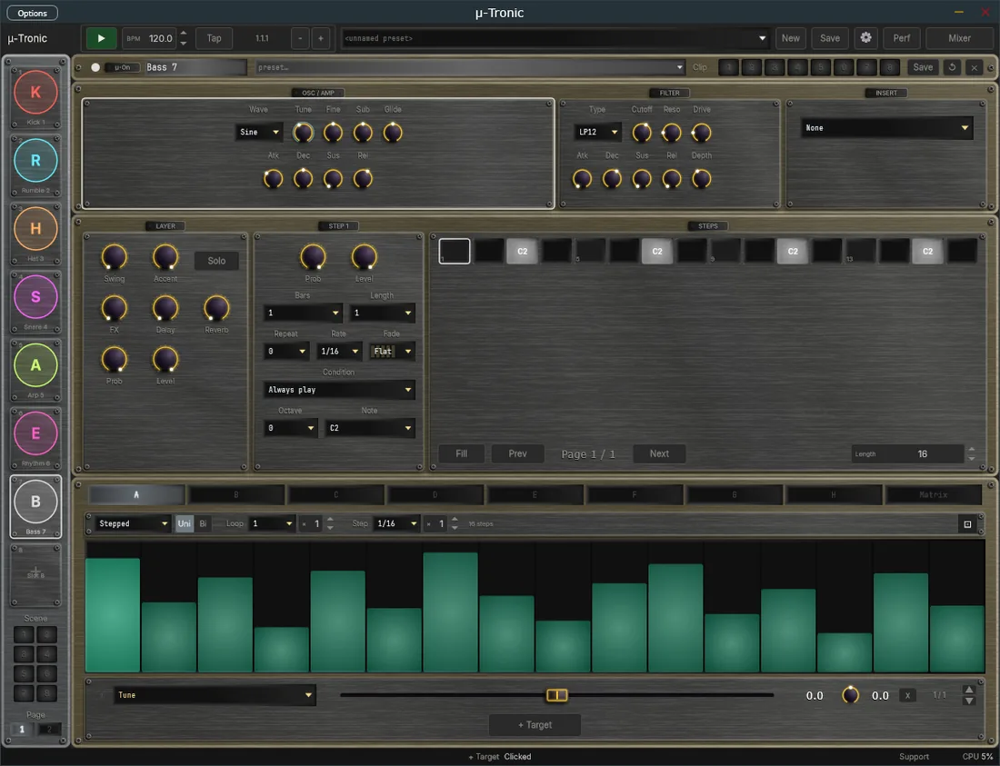
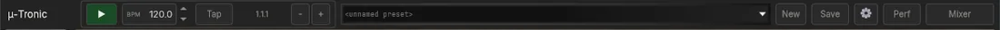
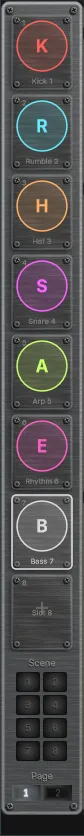
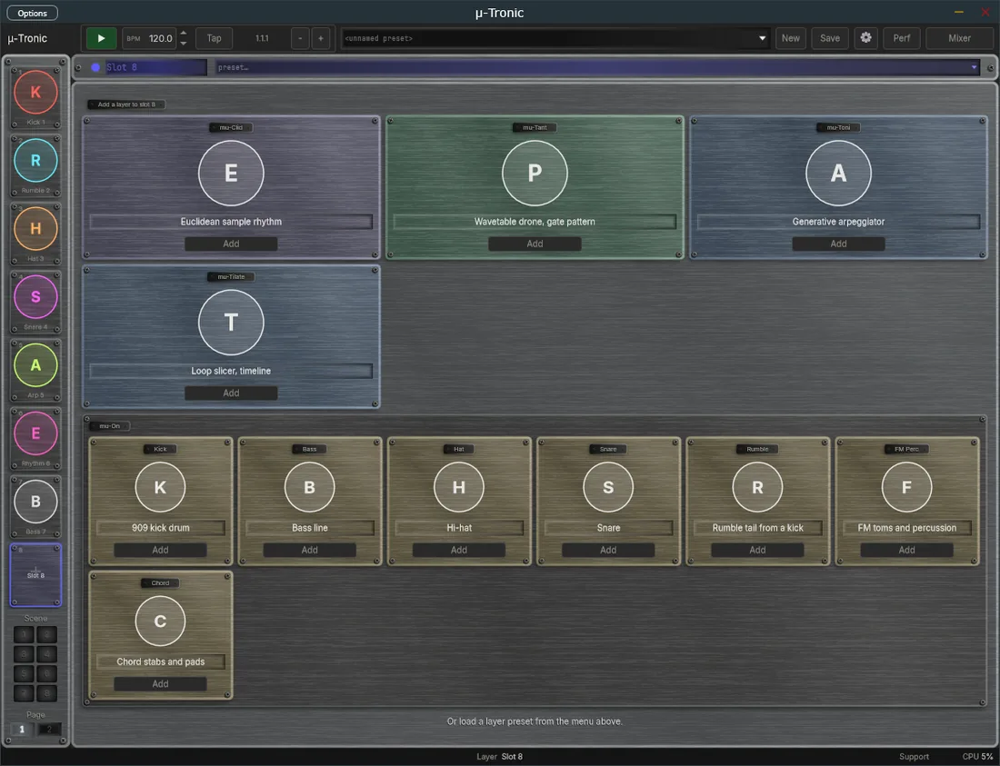
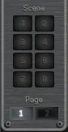
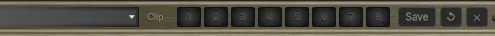
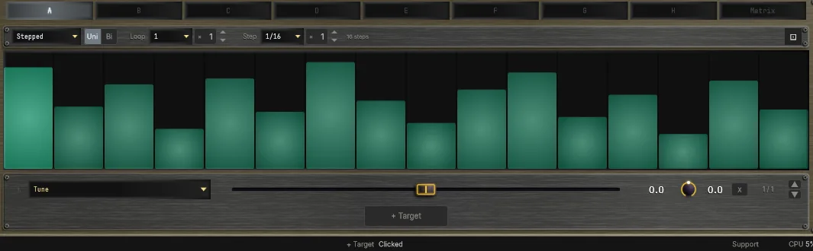
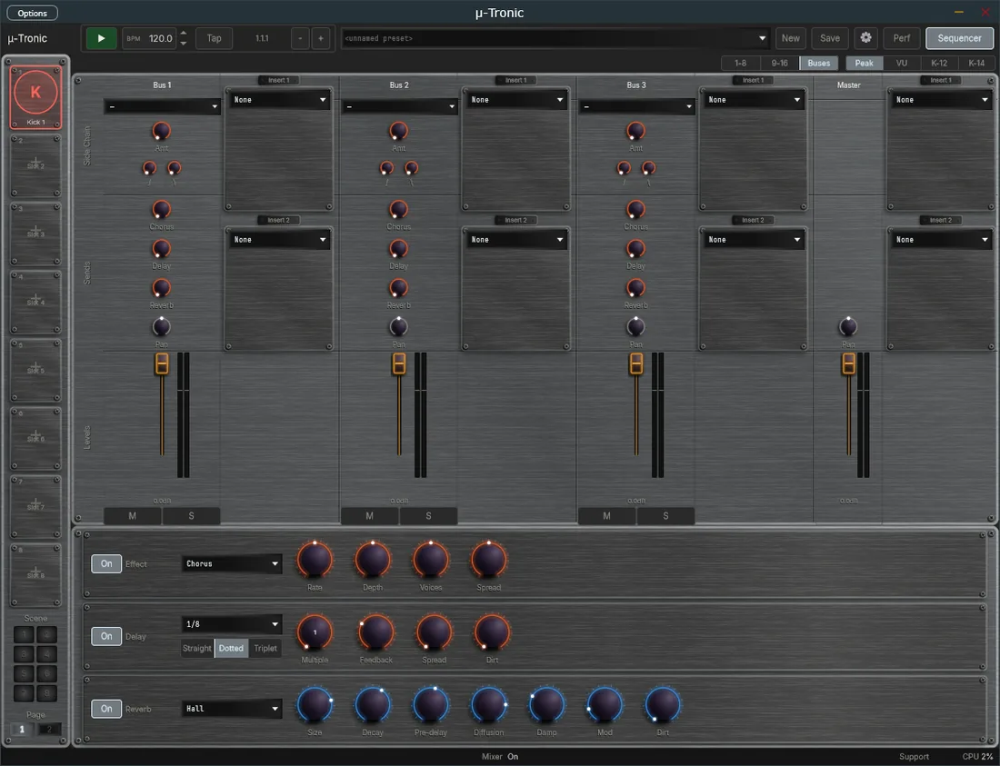
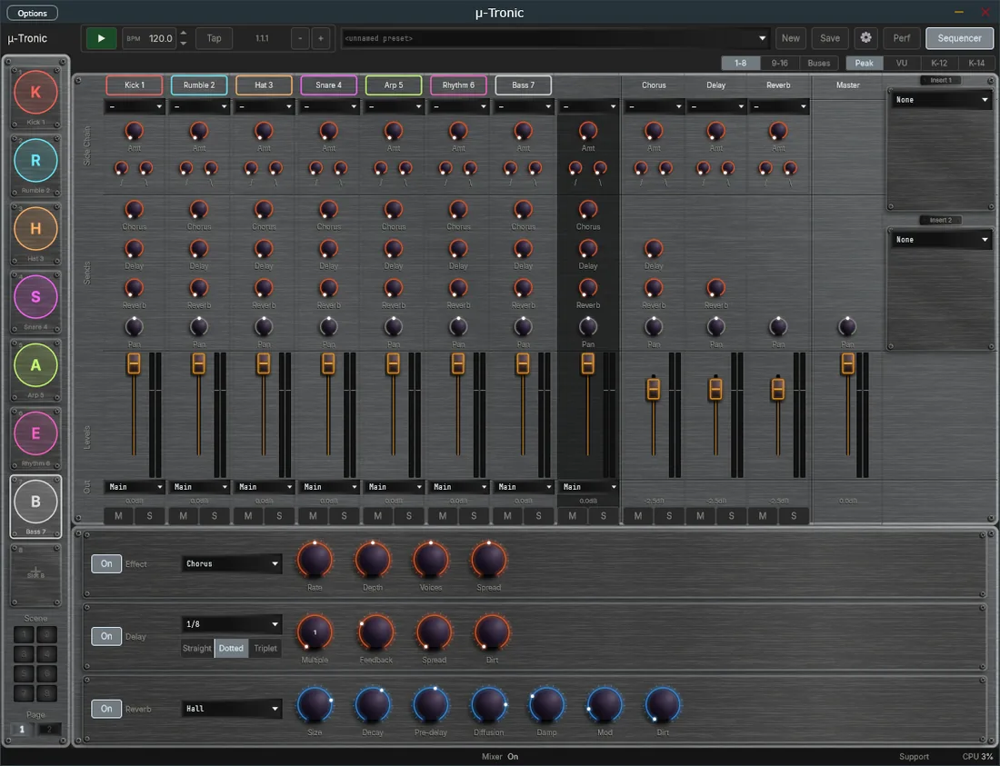
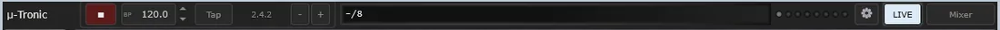

mu-Tronic Manual: Standalone Live Performance Rig User Guide
mu-Tronic: Performance Unit.
Prefer a file? Download the manual as a PDF. Back to mu-Tronic · release notes · all guides.
1. Introduction
mu-Tronic is a performance unit from Transwarp Development Project. It is a standalone application: there is no VST3 or CLAP version. mu-Tronic is free to download and use, with every feature, and a one-off £30 licence removes the licence reminder (see Supporting mu-Tronic).
mu-Tronic starts empty. It has sixteen layer slots, shown eight at a time on two pages. Into each slot you put one layer, chosen from the instruments of the other mu apps: a Rhythm from mu-Clid, a Pattern from mu-Tant, an Arp from mu-Toni, a Phrase from mu-Tilate (a loop slicer), or one of mu-On's seven engines (Kick, Bass, Hat, Snare, Rumble, FM Perc and Chord). A layer in mu-Tronic is the same instrument you know from its own app, with the same controls, modulators and presets. Mix and match as you like: sixteen layers, any combination.
Around the layers is the family you may know from the other apps: the same mixer, effects, modulators, presets and transport bar. mu-Tronic adds three buses to the mixer, so you can group layers and process the group, and scenes, so you can change the clip on every layer with one press.
Because mu-Tronic hosts several instruments at once, it can stand in for mu-link as a performance tool: one window, one tempo, one mix.
The Layer Types
- Rhythm (from mu-Clid) - a Euclidean sample rhythm. It can also send MIDI notes instead of sound.
- Pattern (from mu-Tant) - a wavetable drone with a gate pattern.
- Arp (from mu-Toni) - a generative arpeggiator.
- Phrase (from mu-Tilate) - a loop slicer: one audio loop cut into slices at its hits, played by a timeline sequencer.
- Kick, Bass, Hat, Snare, FM Perc and Chord (from mu-On) - a 909-style drum, bass, percussion or chord sound with its own row of up to 64 steps (16 by default).
- Rumble (from mu-On) - a long, dark tail made from another layer's sound, usually a Kick.
Each of these is described in the manual of the app it comes from. This manual covers what is different in mu-Tronic.

2. Installation
mu-Tronic is a standalone application. Run mu-Tronic.exe from any location.
On first launch mu-Tronic creates a content folder at %USERPROFILE%\Documents\TDP\muTronic\. Full mu-Tronic presets (.muTronic) are kept there. Layer presets are not: mu-Tronic reads and writes the preset folders of the other apps (see Presets), so install the apps whose layers you want to use, or at least keep their folders.
An Options button at the top left of the window opens the audio and MIDI device settings: the audio output, and the MIDI inputs and outputs (see MIDI In and Out).
Supporting mu-Tronic
mu-Tronic is free to download and use, and every feature works for everyone. A copy without a licence shows a polite reminder each time it loads. A one-off licence for £30 removes the reminder: after you pay, a licence key is sent by email from Lemon Squeezy, our payment provider, and entering the key removes the reminder for good. The key changes nothing else; mu-Tronic works the same with or without it.
A copy without a key shows a polite 'Support mu-Tronic' window every time you load mu-Tronic: each new instance in your DAW, and each time the standalone app starts. It has three buttons:
- Maybe later — closes the window for that instance and carries on. It appears again the next time you load mu-Tronic.
- Enter licence key - opens the 'Enter licence key - mu-Tronic' panel, where you type in your key.
- Get a licence — opens the checkout page in your web browser. A licence is a one-off payment of £30, and a key is emailed to you.
The reminder cannot be switched off without a licence. To bring the window back at any time, click the Support link at the right of the Status Bar, or the Support button in the About panel.
To enter your key, click Enter licence key in the Support window, or click the mu-Tronic logo to open the About panel and click Enter a key. In the 'Enter licence key - mu-Tronic' panel (it reads 'Enter your licence key to remove the support reminder. Everything works either way.'), paste your key into the Licence key box and click Activate (or press Return). If you do not have a key yet, click Get a licence to open the checkout page in your web browser. mu-Tronic needs an internet connection the first time, to register the key. One key can be used on up to 5 machines. When the key is accepted the panel shows a confirmation and closes, the About panel thanks you for your support, and the Support window and Support link no longer appear.
A licensed copy shows 'Thank you for supporting mu-Tronic.' in the About panel.
Once activated, mu-Tronic checks your key with the server now and then when it starts. If you are offline at that moment it carries on working as normal for up to 30 days.
If activation fails, the panel tells you why. Check that you pasted the whole key and that you are online, then try again. A key that has already been used on 5 machines needs one of them released first; use Contact Support at the bottom of the Settings page. If the computer has no internet connection at all, the licence key panel shows a machine code at the bottom. Send that code to Contact Support and you can be sent an offline licence file for that computer, to place in the mu-Tronic content folder.
3. Interface Overview
The mu-Tronic window is divided into these regions:
- Transport Bar (top) - playback, BPM, presets, settings, performance mode and mixer
- Layer Sidebar (left) - eight slots at a time, the scene pads and the page switch
- Layer Editor (centre) - the header, the controls and the modulators of the selected layer
- Mixer overlay - opened from the transport bar, replacing the editor
- Status Bar (bottom) - the name and value of the control you last touched, a Support link (until a licence key is entered), and the CPU readout at the right-hand end
The window has two sizes, Medium and Large, chosen in Settings (Display, Size). Everything scales with it.
The main area takes the colour of the selected layer's type: purple for Rhythm, green for Pattern, blue for Arp and Phrase, and yellow for the seven mu-On layers. The transport bar, sidebar, mixer and settings keep mu-Tronic's own ice-white and steel.
Every control reports to the Status Bar: touch any knob, drop-down, switch or button and the bar shows its name and value, so you always see what you last changed.
CPU Readout
At the right-hand end of the Status Bar, mu-Tronic shows CPU followed by a percentage. It is how hard the audio engine is working, with all sixteen layers, the buses and the effects counted. The figure is the worst moment of the last second, because it is the brief spike that causes clicks. The number turns amber from 70 percent and red from 90 percent. If it goes red, remove a layer or a heavy effect. The readout stays visible in Performance mode.
4. Transport Bar
The transport bar is the same as in the other mu apps. From left to right:
- mu-Tronic logo - click to open the About panel.
- Play / Stop - starts and stops every layer together. Locked while an external MIDI clock controls play.
- BPM display - tempo from 20.0 to 300.0 BPM with one decimal. Click the arrows to step one whole BPM (Shift+click steps a tenth). Double-click to type a value. Locked while an external MIDI clock sets the tempo.
- Clock lamp or Tap button - the lamp shows the state of an incoming MIDI clock (dim amber waiting, green locked, red lost); Tap sets the tempo from your taps. You see one or the other, never both.
- Nudge buttons (- and +) - hold to run the groove 4 percent slower or faster to line up by ear; the set tempo returns when you let go.
- Position - bar, beat and sixteenth readout.
- Preset dropdown / New / Save - load and save full .muTronic presets. The dropdown also holds the Import and Performances entries (see Presets).
- Settings (gear) icon - opens Settings.
- Perf button - turns on Performance mode (also Ctrl+P). See Performance Mode.
- Mixer button - opens the mixer. The label changes to Sequencer while the mixer is open.

5. Slots and the Layer Sidebar
mu-Tronic has sixteen slots, numbered 1 to 16. The sidebar shows eight of them at a time. Each item shows the slot number, a small picture of the layer's type with a letter on it, and the layer's colour. A new mu-Tronic holds no layers at all: every slot is empty, and the first thing you see is the layer chooser (see Adding a Layer).
- Select - click an item to select that slot. The selected slot is outlined and shown in the main area.
- Empty slots - shown with a + sign. They stay in the list, so the slots never move or renumber.
- Colour - each layer has its own colour. Within one page no two layers share a colour; slot 1 and slot 9 may both be red.
- Reorder - drag an item onto another slot on the same page to swap the two. Dragging onto an empty slot moves the layer there. The layer keeps its mixer strip, clips, modulators and colour. Moving a layer to the other page is not yet possible.
- Delete - the Delete (x) button in the layer header empties the slot, after a confirmation. No other slot moves. The layer's mixer strip, clips and modulators go with it.
- Names - every layer has a name that you can change: click the name in the layer header and type. The default is the type and the slot number, for example Kick 3 or Rhythm 12. Delete the text to return to the default. Names are saved, and they appear in the mixer and in the sidechain lists.

Pages
The page switch sits at the foot of the sidebar, under the engraved word Page. Click 1 for slots 1 to 8 or 2 for slots 9 to 16. You can also press Page Up and Page Down to move between pages; they stop at the first and last page. The keys work when no text box is being edited. While the mixer is open they change the mixer's page instead.
Switching page selects the slot at the same position on the new page, so slot 3 goes to slot 11. Selecting a slot on the other page by any other route also switches the page to follow it.
Scene Pads
Above the page switch is the Scene block: eight numbered pads in two columns. Each pad launches clip n on every layer that stores one, across both pages. See Scenes and Clips.
6. Adding a Layer
Select an empty slot and the main area shows the layer chooser, titled Add a layer to slot n. It is a set of cards, one for each layer type:
- mu-Clid - Rhythm: Euclidean sample rhythm.
- mu-Tant - Pattern: wavetable drone, gate pattern.
- mu-Toni - Arp: generative arpeggiator.
- mu-Tilate - Phrase: loop slicer with a timeline sequencer.
- mu-On - a framed group of seven cards: Kick (909 kick drum), Bass (bass line), Hat (hi-hat), Snare (snare), Rumble (rumble tail from a kick), FM Perc (FM toms and percussion) and Chord (a chord player for dub-techno stabs).
The cards run in that order: the four products first, then the mu-On group. Click a card, or its Add button, to put that layer in the slot. The new layer starts from the default for its type (see Presets). The status bar confirms with Added followed by the layer's name.
You can also load a layer preset into an empty slot: open the preset dropdown in the layer header and choose any layer preset. The slot takes the type of the preset you chose.
Rumble works on the sound of another layer, called its Source. A new Rumble listens to the first Kick layer if there is one. If there is no Kick yet, the Rumble is added with no Source and the status bar says Source needed: add a Kick layer. Choose a Source in the Rumble's own Source dropdown. A Rumble can listen to any other layer that is not a Rumble.

7. The Layers
A layer in mu-Tronic has the controls of its type, in the same place as in the app it comes from. See that app's manual for the details of each control. This chapter lists what is different in mu-Tronic.
The Layer Header
The strip across the top of the layer editor holds:
- Layer colour dot and a small type tag naming the app the layer comes from: mu-Clid, mu-Tant, mu-Toni, mu-Tilate or mu-On.
- Layer name - click to edit.
- Layer preset dropdown - lists the layer presets for this layer's type only (see Presets). An empty slot lists every type.
- Notes In - for Arp and Pattern layers only. See below.
- Clip strip - eight numbered pads. See Scenes and Clips. A Rumble layer has no clip strip.
- Save - saves the layer as a layer preset of its type.
- Reset (circular arrow) / Delete (x) - reset the layer to its defaults, or empty the slot. Both ask first. Reset also clears the layer's clips.
Notes In (MIDI channel per layer)
Arp and Pattern layers can be played from a MIDI keyboard. Each of these layers has its own Notes In setting in the header, so different layers can listen to different channels. Choose Omni (every channel, the default) or Channel 1 to Channel 16. The setting is saved with the layer and with the full preset. Loading a layer preset or a clip never changes it, because it describes your MIDI setup rather than the sound. A Pattern layer shows the control in Free mode too; it takes effect when you switch that layer to Note mode. Rhythm, Phrase and the mu-On layers do not read notes and show no Notes In control.
Rhythm
- The Save button opens the same Save Rhythm Preset card as in mu-Clid: Name, Description, Category and Embed sample in file. Tick Embed sample in file if you will open the preset on another computer.
- A new Rhythm layer starts with no sample if its default sample cannot be found, and shows the normal empty sample bar (drop a sample here or click to browse). A Missing warning appears only for a sample that a loaded preset or saved session names and that has gone.
- A Rhythm set to send MIDI instead of sound makes no audio. Its mixer strip is drawn dimmed. The notes go out through the MIDI output device chosen in the standalone's settings.
Pattern
On the Root and Scale row, at the right, is a MIDI switch with two choices, Free and Note. In Free, the drone plays on its own. In Note, it sounds while a key is held, at the key's pitch. Each Pattern layer has its own setting; it is saved with the layer but is not part of a layer preset. Free is the default.
Phrase
A Phrase layer is mu-Tilate's loop slicer. Load a loop into the layer; mu-Tilate finds the hits in it, cuts the loop into slices at those points, and its timeline sequencer places the slices as blocks so you can rearrange, repeat, reverse or thin out the loop. The layer has its own sound controls, mixer strip and modulators like every other layer. Loops are taken from mu-Tilate's own sample folder and are shared with it, never copied. See the mu-Tilate manual for the loop editor, the slices and the timeline.
mu-On Layers (Kick, Bass, Hat, Snare, FM Perc and Chord)
These are mu-On's engines, each with its own row of steps. Because the layer is one of them, there is no Engine selector: to change the sound family, empty the slot and add a different layer. The Layer box holds this layer's own Length, Speed, Play Mode, Swing and Accent. Right-click a knob that has a locked value on the selected step and choose Remove p-lock to remove the lock. The step row shows 16 steps at a time; click a step to turn it on or off, right-click for an accent.
A row can be up to 64 steps long. Under the row, Prev and Next show the previous or next sixteen steps, a label such as Page 2 / 4 says where you are, and the Length control in the Layer box (1 to 128, default 16) sets how many steps the row plays before it starts again. Speed (1/4 to 1/64, with triplets; default 1/16) sets how long each step lasts, and Play Mode chooses Forwards, Backwards or Random; Play Mode is a modulation target. Use its arrows to change it by one, or double-click it and type a number. Steps past the Length are shaded with diagonal hatching and do not play; they keep their settings if you lengthen the row again. A tie that crosses a page edge shows as a short stub at the start of the next page. If you shorten the row past the selected step, the selection moves back to the last step, so the Step panel always edits a step you can see. The Layer box is narrow, leaving room for a wide Steps box. Paging and Length work the same way as in mu-On.
The Step Panel
These layers share mu-On's Step panel, which edits the selected step (the one you last clicked). Everything in it belongs to that one step.
- Prob and Level (knobs) - Prob is the chance that the step plays, 0 to 100 percent (default 100). Level is the step's own volume, 0 to 100 percent (default 100).
- Plays on Loop - let a step play only on some loops of a longer cycle, where a loop is one pass through the whole row. Length (1 to 8, default 1) is how many loops make the cycle. Loops is a drop-down where you tick which of them the step plays on; its box shows the ticked loops, or All, or None.
- Repeat, Rate and Fade - repeat the step's note quickly, like a roll. Repeat (0 to 16, default 0 = off) is how many extra hits follow the first, Rate is the time between hits, and Fade shapes their level: Flat, Out 50, Out, In 50 or In.
- Condition - a rule the step must also pass: Always play (the default), Play on Fill, Play if previous played, or Play if previous didn't play.
Fill is a press-and-hold button under the step rows. While you hold it, steps set to Play on Fill play; let go and they stop. Fill is also a modulation target, so a modulator can press it for you. A Chord step has Prob, Plays on Loop and Condition but no Level, Repeat, Rate or Fade. Details are in the mu-On manual.
Sound Panels
- Bass - two panels, OSC/AMP (oscillator, sub and amp envelope) and Filter, which has its own attack, decay, sustain and release envelope.
- Filters - Kick, Hat, Snare and FM Perc have a Filter panel, and the Bass and Chord have filters of their own. All offer the same sixteen filter types.
- Hat tune link - a lamp under the Hat's Cl.Tune and Op.Tune. When on, the two tune knobs move together.
The insert knobs in each layer show a live arc when a modulator is moving them.
Rumble
Rumble has an envelope and a Source dropdown instead of a step row. The envelope curve shows a baseline, level lines at 25, 50 and 75 percent, and beat lines that follow its loop length.
Effect Send Names
The mixer's Effect return is named after its algorithm, for example Chorus or Echo. The Effect send knob in each layer, and the modulation target for it, carry the same name.
Modulators
Every layer has its own modulators exactly as in its own app. A Step panel's Fill button is a target too. Modulators can only move the controls of their own layer. See the manual of the layer's app.
8. Scenes and Clips
Clips
A clip is a stored copy of one layer's current state, ready to recall while the music plays. Every layer, except Rumble, has up to eight clips in the Clip strip in its header: the word Clip followed by pads numbered 1 to 8. A clip is saved in the layer's own type, so it carries that type with it.
Each pad is lit in the layer's colour:
- Bright and steady - the clip that is playing.
- Dim - a clip is stored here.
- Unlit, with just its number - the pad is empty.
- Pulsing - the clip is queued and will start at the next bar.
- Flashing on and off - the playing clip belongs to a muted layer.
How to use the pads:
- Click a stored pad to launch it. While playing it waits for the next bar and the pad pulses; when stopped it starts at once.
- Click the playing pad to mute the layer; click again to unmute.
- Click an empty pad to store the layer's current state there.
- Shift+click any pad to store the current state in it. If the pad holds a different clip from the one playing, mu-Tronic asks you to confirm with Replace.
- Right-click a pad (or Ctrl+click) for a menu with Store here, Copy, Cut, Paste and Clear. Copy and Cut put the clip on a clipboard; Paste puts it in another pad, or in a pad of another layer of the same type, and asks first if the pad already holds a clip. Paste is greyed, with the reason in its text, when nothing has been copied or the copied clip is for a different layer type.
Auto-save: by default, edits you make to a layer while one of its clips is playing are written back into that clip a moment after you stop moving the control, so the clip you launch next time is the one you left. Switch this off with Auto-save clip edits in Settings (General, Clips); with it off, turning a knob changes only the playing layer, not the stored clip, and you keep a tweak by storing it again with Shift+click. Auto-save does nothing in Performance mode. Resetting a layer clears its clips; deleting a layer removes them with it. Clips are saved with the full preset and your session, but not in layer presets. A clip of a different layer type is never launched: the status bar says that the clip is for a different layer type.
Scenes
A scene launches clip n on every layer at once. It replaces the Scene buttons of mu-link. The eight Scene pads sit in the sidebar, under the layers and above the page switch, and they always act on all sixteen slots, whichever page you are looking at.
- Click pad n to launch clip n on every layer that has a clip n. Layers that have no clip n, empty slots, and layers whose clip n belongs to a different type keep playing as they are.
- All the layers switch together, at the next bar line.
- A pad is unlit when no layer stores that clip, dim when at least one does, bright when every layer that stores it is playing it, and pulsing while any layer is waiting to start it.
- The status bar reads Clip n on N layers when a scene launches, or Clip n is empty when no layer has that clip.
In Performance mode the pads cannot be clicked, but they keep moving so that you can see what the control surface is doing.


9. Modulators
Each layer has eight independent modulators (Mod A to Mod H) plus a Matrix tab, the same shared engine as the other mu apps, in the lower part of the layer editor. Each has a Stepped or Smooth mode, a polarity, a loop length, and its own targets with a depth from -100 to +100 percent. Which controls can be targets depends on the layer's type; see that app's manual.

10. Mixer
Click the Mixer button in the transport bar to open the mixer. It is the same shared mixer and effects rack as the other mu apps, with room for sixteen channels and three buses. The mixer has its own page selector at the top right: 1-8, 9-16 and Buses. When you open the mixer it shows the page that the sidebar is on; after that the two pages are independent, so you can adjust a bus while the editor stays on a layer. Page Up and Page Down move between the channel pages while the mixer is open; click Buses to reach the bus page.
Channel Strips
Each slot has a channel strip with a fader and meter, pan, mute and solo, sidechain ducking (source, amount, attack and release) and Effect, Delay and Reverb sends. The strip shows the layer's name in its colour. An empty slot's strip is dimmed but can still be set. A Rhythm layer set to send MIDI has a dimmed strip, because it makes no sound.
The sidechain source list holds all the other layers by slot and name, the External input, and the buses. A layer can duck from any other layer.
Out: Main or a Bus
At the foot of each channel strip, the Out selector chooses where the channel goes: Main (the master output, the default), Bus 1, Bus 2 or Bus 3. A channel set to a bus shows the bus name lit. The channel's sends to the Effect, Delay and Reverb returns do not depend on its Out setting. A bus always goes to Main. A bus cannot be routed to another bus.
The Buses Page
Click Buses in the mixer's page selector. The page shows three bus units, then the Master. Each bus unit is a strip with its own insert column beside it, built like the Master:
- Name - Bus 1, Bus 2 or Bus 3.
- Sidechain - the same source, amount, attack and release as a channel. A bus can duck from any layer and from any earlier bus (Bus 2 can use Bus 1; Bus 3 can use Bus 1 and Bus 2), never from itself or a later bus.
- Sends - Effect, Delay and Reverb sends, as on a channel, taken after the bus fader.
- Pan, fader with meter, level readout, mute and solo.
- Insert 1 and Insert 2 - two insert effects, in that order, with the same list of algorithms and four knobs each as the Master inserts.
The three FX returns appear on both channel pages and are unaffected by which page you view. The Effect, Delay and Reverb rows below the strips are the same on every page.


Insert Effects
Every layer, every bus and the Master has insert effects. The algorithm dropdown lists None, 3-Band EQ, Bitcrusher, Chorus, Clipper, Compressor, Flanger, Fold, Hard Clip, Karplus, Limiter, Overdrive, Phaser, Ring Mod, Soft Clip, Tape Sat, Vocoder and Vocoder St. Four knobs appear and are labelled to match the algorithm.
Overdrive
Overdrive is a warm, tube-style saturation that also adds a little even-harmonic body. Its four knobs:
- Drive (0 to 100, default 0) - how hard the signal is pushed. At 0 it passes unchanged.
- Output (-24 to 0 dB, default 0 dB) - the level after the saturation, to match the loudness before and after.
- Bias (0 to 100 percent, default 25) - how asymmetrically the signal is clipped. More Bias adds more even harmonics and a thicker sound.
- Tone (200 Hz to 20 kHz, default 20 kHz) - a low-pass filter on the result. Turn it down to soften the top end.
Tape Sat
Tape Sat gives the soft, dense squash of a tape machine. As you turn Drive up, the highs compress and soften first, a little even-harmonic warmth is added, and small signals stay clean. Its four knobs:
- Drive (0 to 100, default 30) - how hard the signal is pushed into the tape.
- Output (-24 to 0 dB, default 0 dB) - the level after the saturation, to match the loudness before and after.
- Head Bump (0 to 100 percent, default 30) - a gentle lift of up to 4 dB in the low end around 75 Hz, like the bass swell of a tape head. At 0 it is off.
- Tone (200 Hz to 20 kHz, default 20 kHz) - a low-pass filter on the result. Turn it down to soften the top end.
Chorus, Flanger and Phaser
Chorus, Flanger and Phaser are also available as insert effects. They use the same sound as the Effect send of the same name, with a Mix knob to blend with the unprocessed signal. Inserts saved before this change may sound wider and thicker now.
- Chorus - Rate (default 0.8 Hz), Depth (50 percent), Delay (5 to 30 ms, default 15) and Mix (50 percent). A three-voice chorus spread across the stereo field.
- Flanger - Rate (default 0.3 Hz), Depth (70 percent), Feedback (-95 to 95 percent, default 50) and Mix (50 percent). Left and right sweep a quarter of a cycle apart.
- Phaser - Rate (default 0.4 Hz), Depth (80 percent), Feedback (0 to 90 percent, default 40) and Mix (50 percent). Six stages, left and right a quarter of a cycle apart.
Effects and Master
- Effect - Chorus, Flanger, Phaser or Echo. A pure send, with no Mix knob.
- Delay - a Time dropdown (Free, 1/32, 1/16, 1/8 or 1/4), Feedback, Spread and Dirt.
- Reverb - Room, Hall, Plate or Spring, with Size, Decay, Pre-delay, Diffusion, Damp, Mod and Dirt. A pure send.
- Master - the master strip has two inserts, Insert 1 and Insert 2, that the summed output passes through in that order.
A row of buttons at the top right (Peak, VU, K-12, K-14) chooses the metering standard.
11. Presets
Full Presets (.muTronic)
A full preset saves the whole of mu-Tronic: every slot's layer, its settings, clips and name, the mixer, the buses and the effects. Presets are kept in Documents\TDP\muTronic\Presets. Load from the transport bar's dropdown. Save with the Save button: enter a name, an optional description and a category, and tick Save as Default to make it the preset that loads at startup and when you press New. Loading a preset shows page 1 with slot 1 selected. While the transport is playing, a loaded preset waits and takes over at the next bar.
Layer Presets and Where They Live
mu-Tronic does not keep a separate set of layer presets. Each layer type reads and writes the preset folder of the app it comes from, in the shared Documents\TDP folder. A layer you save in mu-Tronic appears in the original app, and the other way round.
- Rhythm - Documents\TDP\muClid\Rhythms, files ending .muRhythm.
- Pattern - Documents\TDP\muTant\Voices, files ending .muPattern.
- Arp - Documents\TDP\muToni\Arps, files ending .muArp.
- Phrase - Documents\TDP\muTilate\Phrases, files ending .muPhrase.
- Kick, Bass, Hat, Snare, Rumble, FM Perc and Chord - Documents\TDP\muOn\Tracks, files ending .muTrack. A .muTrack file knows which engine it is for, so a Kick preset shows only in Kick slots.
In a slot that holds a layer, the layer preset dropdown lists only presets of that layer's type (for example only .muArp files in an Arp slot). To use a preset of another type, choose it in an empty slot. Presets from the other apps' factory and user folders both appear.
Defaults for New Layers
A layer added from the chooser starts from the default of its own app: the file named _default in that app's layer preset folder (for example _default.muArp in the Arps folder), which the app writes when you tick Save as Default in a layer preset. If there is no such file the layer starts from the built-in defaults. So a default you set in mu-Toni is the Arp you get in mu-Tronic.
Import Product Preset
You can bring a whole preset from another mu app into mu-Tronic. Open the transport bar's preset dropdown and choose Import product preset... in the Import section. A file chooser opens, filtered to .muClid, .muTant, .muToni and .muOn files. Choose one.
- The layers of the preset are laid into the free slots, in order, starting from the first empty slot. Each layer keeps its settings, name, mixer strip (level, pan, mute, sends and sidechain) and, for a Pattern layer, the tonal centre if you have no Pattern yet.
- Slots that already hold a layer are never touched. If the preset has more layers than there are free slots, nothing is imported and the status bar reads Needs n free slots, m free.
- Solo is never imported, so it cannot silence the layers already in mu-Tronic. A sidechain or Rumble Source that pointed at another layer of the preset follows that layer to its new slot.
- The preset's global effects, master settings, clips and layer colours are ignored. mu-Tronic keeps its own.
- On success the status bar reads Imported n layers from followed by the preset's name. If the file cannot be read, nothing is imported and the status bar says so.
Presets saved by an old version of mu-On that predates its variable layer count cannot be imported.
Performance Mode
Performance mode turns mu-Tronic into a locked gig view. The screen shows what is playing, but you cannot change anything with the mouse or keyboard. A connected control surface switches presets and layers, and the screen follows it. A performance is a saved list of up to eight full presets, stored as a .muPerformance file in the Performances folder in your content folder.
The Performance Chooser
Open the chooser from the Performances entry at the bottom of the transport bar's preset dropdown, or by clicking the Perf button (or pressing Ctrl+P) when no performance has been chosen yet. On the left is the list of saved performances; on the right are the eight places. Each place has a + Preset button (empty) or Replace, Up, Down and Remove buttons (filled). A preset whose file is missing shows a red lamp. New starts an empty performance; Load opens a .muPerformance file; Save stores it under a name; Rename and Delete do what they say. Use makes this performance the one that Performance mode plays.
Entering and Leaving
Click the Perf button or press Ctrl+P. The button lights and reads LIVE, and the preset dropdown and New and Save are replaced by a step indicator with a row of eight lamps. Everything is locked, including the sidebar's page switch, the scene pads, the mixer and Settings, but they keep moving so that you can see what the surface is doing. To leave, press and hold the Perf button for one second. A plain click does nothing, so you cannot leave by accident.

12. Settings
Click the gear icon to open Settings. Click Close to return.
General:
- Audio, Master Vol - overall output level.
- Display, Size - Medium or Large window.
- Transport, Tempo and Time signature - the internal clock's tempo, and the time signature that the Position readout counts in.
- Clips, Auto-save clip edits - a tick box, ticked by default. Whether edits to a playing clip are saved into it (see Clips).
- Updates, Check for updates - a tick box. When ticked, mu-Tronic asks the transwarp.me website once a day for the latest version number and shows an Update available link in the status bar when there is a newer one. It sends nothing about you. Untick to switch the check off.
MIDI:
- MIDI Clock, Source - Internal, or MIDI In to follow an external MIDI clock. A Messages choice (Clock only, Transport only, Clock + Transport) and a Sync offset appear. They work as in the other mu apps.
- MIDI Program Change - buttons that open the tables mapping incoming program-change messages to presets.
At the foot of Settings, Contact Support opens the support page in your web browser. The Settings page also has a Send Feedback link (feedback@transwarp.me) beside Contact Support.
Notes In is not in Settings: each Arp and Pattern layer has its own, in the layer header.
13. Connecting to mu-link
mu-link is a companion application from Transwarp Development Project: a local audio hub and master clock for the mu family. When mu-link is running, mu-Tronic connects to it automatically. Its audio is summed into mu-link's mix and its transport locks to mu-link's master clock.
How to Connect
- Launch mu-link, then launch mu-Tronic, in either order. Within about a second the mu-Tronic title bar shows mu-link connected.
- mu-Tronic's audio plays through mu-link's output device, summed with any other connected mu apps.
- mu-link is the tempo master. Use mu-link's Play/Stop and tempo while connected.
- Quit mu-link and mu-Tronic reverts to its own audio device and internal transport, with no restart.
Because mu-Tronic holds up to sixteen layers itself, you often do not need mu-link at all. Use mu-link when you want to combine mu-Tronic with other apps or with outboard gear. See the mu-link User Manual for the full picture.
14. Tips and Workflow
- Starting out: add a Kick to slot 1 and a Bass to slot 2, press Play, and turn on a few steps.
- Rumble: add a Kick, then a Rumble, which listens to the Kick by default.
- Group the drums: send the Kick, Hat and Snare to Bus 1 and put a Compressor in Bus 1's Insert 1 to glue them.
- Pump the bass: in the Bass layer's channel strip, set the sidechain source to your Kick.
- Prepare variations: store clip 1 on every layer as your first section, change things, and store clip 2. Then use the Scene pads to switch the whole set at the next bar.
- Bring in an old idea: use Import product preset to pull a whole mu-Clid or mu-On preset into the free slots.
- Keep an eye on the CPU readout as you add layers.
15. Technical Specifications
- Format: Standalone (Windows). No VST3 or CLAP. Free to download and use with every feature; a one-off £30 licence removes the licence reminder.
- Layers: 16 slots on two pages of 8, starting empty
- Layer types: Rhythm, Pattern, Arp, Phrase, Kick, Bass, Hat, Snare, Rumble, FM Perc, Chord
- Mixer: 16 channel strips, 3 buses with 2 inserts each, Effect / Delay / Reverb returns, master with 2 inserts
- Insert effects: 14 plus None, on every layer, bus and the master
- Clips: 8 per layer (none for Rumble), with copy, cut, paste and auto-save; scenes 1 to 8
- Modulators per layer: 8, plus a matrix view
- Full preset format: .muTronic. Layer presets: .muRhythm, .muPattern, .muArp, .muPhrase, .muTrack (shared with the other apps)
- Import: .muClid, .muTant, .muToni, .muOn full presets
- Third-party libraries: JUCE, Signalsmith Reverb (MIT)
Prefer a file? Download the manual as a PDF. Back to mu-Tronic · release notes · all guides.